Wstawianie węzła
Kolejną standardową operacją w drzewach czerwono-czarnych jest wstawianie węzła. Przyjmiemy następującą strategię:
- Wyszukamy miejsce dla wstawianego węzła (nie pozwalamy wstawiać węzła, którego klucz już istnieje)
- Wstawiamy węzeł w to miejsce i kolorujemy go na czerwono
- Dokonujemy naprawy drzewka (rotacje,przekolorowanie węzłów)
Spis treści (kliknij, by nie scrollować ;]):
- Relacje w drzewku
- 1. scenariusz - wstawiany węzeł jest korzeniem
- 2. scenariusz - wujek wstawianego węzła jest czerwony
- 3. scenariusz - wujek wstawianego węzła jest czarny (formacja trójkątna)
- 4. scenariusz - wujek wstawianego węzła jest czarny (formacja liniowa)
Relacje w drzewku
Krótkie przypomnienie relacji w drzewku na poniższym przykładzie.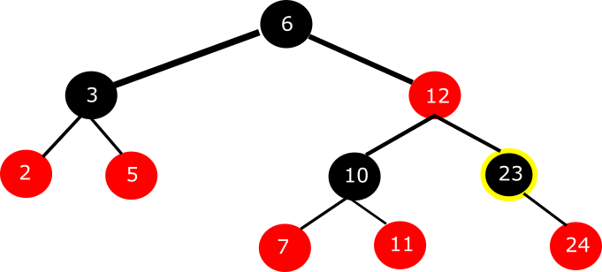
Chcemy określić "who is who" dla węzła o kluczu "23" (ten zaznaczony z żółtą obręczą ;]).
- Węzeł bezpośrednio nad nim jest jego rodzicem.
- Rodzic jego rodzica jest jego dziadkiem.
- Brat jego rodzica jest jego wujkiem.
1. scenariusz - wstawiany węzeł jest korzeniem
Nazwa przypadku mówi za siebie - mamy puste drzewko, wstawiamy pierwszy węzeł, staje się on automatycznie korzeniem. Ale...
We wprowadzeniu do tematu zaznaczyliśmy, że będziemy wstawiali węzeł i go kolorowali na czerwono. Pamiętasz, jakiego koloru powinien być korzeń w RBT? Czarnego! To co musimy zrobić? Przekolorować wstawiony węzeł na czarny! Koniec.
2. scenariusz - wujek wstawianego węzła jest czerwony
Załóżmy, że mamy takie poddrzewo (ważne, że jest to poddrzewo; dlaczego, wyjaśnimy później).
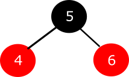
Wstawiamy nowy węzeł, np. o kluczu "3".
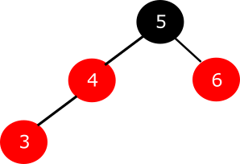
I co się stało? Czy węzeł czerwony ma jakieś obostrzenia dotyczące koloru jego dzieci? Muszą być czarne, prawda? Ale zamiast przekolorywać wstawiony węzeł na czarno robimy inaczej. Zerknijmy, jakiego koloru jest wujek wstawionego węzła.
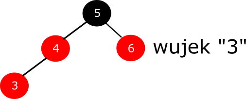
Jest czerwony. Zatem zmieniamy kolory rodzica, dziadka i wujka węzła o kluczu "3" na przeciwne.
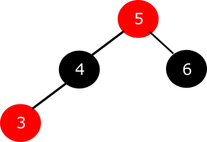
I koniec. Nasze poddrzewko jest naprawione. Poddrzewko, bo gdyby to było pełne drzewo, to jeszcze musielibyśmy zmienić kolor korzenia na czarny, jak poniżej.
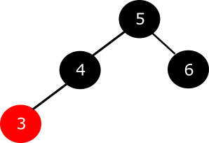
Podsumowując - wstawiamy węzeł, wujek czerwony, zmieniamy kolory.
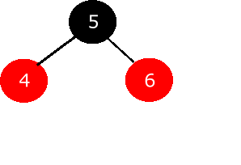
3. scenariusz - wujek wstawianego węzła jest czarny (formacja trójkątna)
Zadaniem głównym tego scenariusza jest doprowadzenie poddrzewa do stanu początkowego formacji liniowej. Jest to zatem pewien etap naprawy, a nie cały proces. Co ważne, możemy mieć prawą i lewą formację trójkątną. Tak samo, jak przy rotacjach - są to symetryczne sytuacje względem siebie. Przejdźmy do przykładu...
Mamy takie podrzewo. Załóżmy, że przed chwilą wstawiliśmy węzeł o kluczu "15"
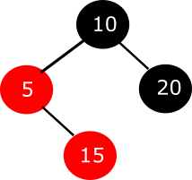

Po lewej stronie jest lewa formacja trójkątna , ponieważ ma wierzchołek trójkąta po lewej stronie. Analogicznie, po prawej stronie mamy prawą formacje trójkątną, ponieważ ma wierzchołek po prawej stronie. Sprawdźmy, jakiego koloru jest wujek :).
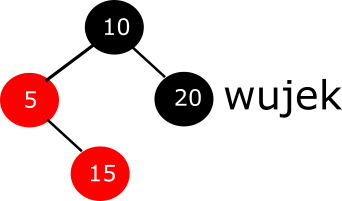
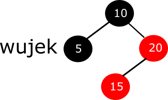
Jest koloru czarnego. Ojej, czeka nas więcej pracy przy naprawie drzewka. Co robimy? W lewej formacji trójkątnej rotujemy rodzica nowo wstawionego węzła o kluczu "15" w lewą stronę. Odpowiednio, w prawej formacji trójkątnej rotujemy rodzica nowo wstawionego węzła o kluczu "15" w prawą stronę.
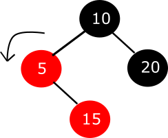
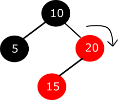
Otrzymujemy odpowiednio lewą i prawą formację liniową, a tym samym - sytuację wejściową do 4. scenariusza. Chcąc naprawić drzewko, trzeba się teraz przełączyć na ostatni scenariusz, a wszystkie operacje będą wykonywane z perspektywy rodzica wstawianego węzła o kluczu "15".
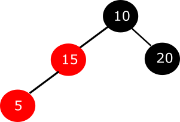
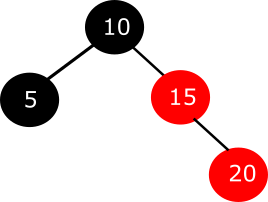
4. scenariusz - wujek wstawianego węzła jest czarny (formacja liniowa)
Okej, możemy miec 2 sytuacje początkowe:
- naprawiliśmy formację trójkątną i patrzymy teraz na drzewko po dokonanej rotacji z perspektywy rodzica wstawionego węzła, który stworzył formację trójkątną
- przed chwilą wstawiliśmy nowy węzeł i po wstawieniu od razu stworzył formację liniową
Podobnie, możemy mieć lewą i prawą formację liniową (wstawiony węzeł, rodzic i dziadek tworzą odpowiednio lewy lub prawy skos).

Aby naprawić drzewko, najpierw rotujemy dziadka w prawo, jeśli jest to lewa formacja liniowa lub w lewo, jeśli jest to prawa formacja liniowa. Węzeł na szaro pokazuje, co się dzieje w rotacji, gdyby tam był węzeł dowolnego koloru (czerwony lub czarny).
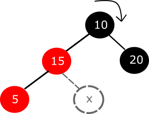
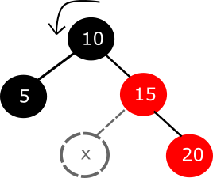
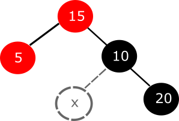
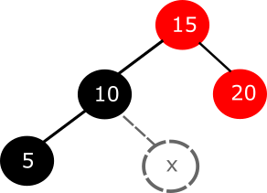
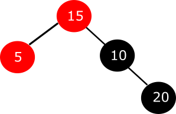
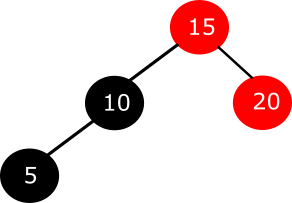
Ostatni krok, to przekolorowanie na przeciwny kolor rodzica i dziadka dodanego węzła.
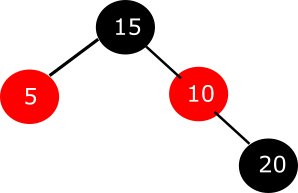
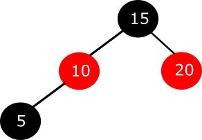
Poniższe animacje pokazują krok po kroku operacje wykonane w scenariuszu 3 i 4.
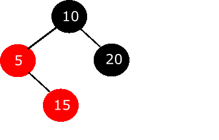
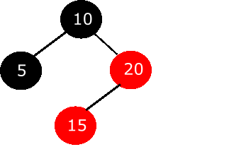